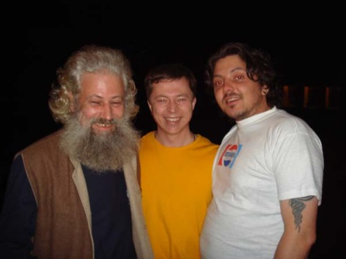

2009-11-03 - ОТЧЁТ О ГАСТРОЛЯХ: ЕКАТЕРИНБУРГ, ЧЕЛЯБИНСК
Екатеринбург, "Семь Ключей", 28.09 – 03.10.2009
Датура - это Лёша Захаров. Я с ним познакомился в Амстердаме, он там на диджериду играл (это такая большая деревянная дудка, метра полтора длиной). В Екатеринбурге он тоже играет, и не только на диджериду, а и на гитаре, на барабанах и вообще на всём. Жена его, Оксана Буч, танцует этнические танцы, а старший сын на барабане стучит, очень ловко у него это получается, совсем по-взрослому. Дочка младшая только-только ходить начала, но со временем тоже что-то будет уметь обязательно.
Вот, у них я и поселился на ближайшие пять дней. Живут они в новенькой многоэтажке на Семи Ключах, с балкона у них виден лес и трамвайное кольцо, а на горизонте – Уральские горы (на самом деле ничего особенного, довольно скромные холмики). Собирались мы поехать в сторону этих гор, да так и не собрались: сперва было некогда, потом задождило. А потом я в Челябинск уехал.
Но до Челябинска успел я и по Екатеринбургу погулять, и куртку зимнюю себе купить, и в студии Fame пофотографироваться (вместе с Датурой, Бучей и ихними детьми), и потусоваться с поэтами, которые каждую среду в "Шарманке" собираются. С поэтами я нажрался коньяку и, кажется, даже читал Шиша Брянского. Или не читал, уже не помню.
Екатеринбург мне понравился, несмотря на скверную погоду. Она, впрочем, не такая уж скверная была: понедельник и вторник прошли без дождей, а в среду даже солнышко выглядывало. Как раз в среду я и вышел впервые в центр, прогулялся по улице Вайнера и окрестностям – а улица Вайнера это широкий такой пешеходный арбат с круглыми лавочками и цветниками посерёдке. Там было много студентов – нормальных таких студентов, вполне питерского вида. А знаменитых уралмашевских гопников не было вообще, хотя говорят, что в Ебурге их до фига и больше – но вот, не довелось мне их увидеть. Должно быть, не сезон.
Екатеринбуржский общепит (особенно лагман из привокзальной харчевни) я часто и с тоскою вспоминал в Челябинске, где ничего такого и в помине нету. И в Новосибирске тоже вспоминал, и в Иркутске… Но давайте сперва про Челябинск.
Челябинск, пансионат "Солнечный", 03.10 – 07.10.2009
До Челябинска из Ебурга четыре часа езды, я даже поспать толком не успел. Встретил меня Данила Афанасьев – бренд-менеджер пансионата "Солнечный" – и сразу продемонстрировал мне ящик дагестанского коньяка, заготовленный для нынешнего концерта. Говорил он много и громко, а я понимал через слово, поскольку сильно не выспался. Но из Данилиных слов сложилось такое впечатление, что буду я в пансионате "Солнечный" не только сказки рассказывать, но и жить. Так оно и оказалось.
Заселили меня в четырёхкоечный люкс. Нормальный, в общем-то, номер, но без отопления и горячей воды. То есть, все эти удобства там, в принципе, есть, но на тот момент их ремонтировали, и ремонт как-то не по делу затянулся. Накормить попытались холодным грибным супом (больше чем наполовину состоявшим из вареного лука) и другой малосъедобной хренью. Я это всё кое-как поковырял и отправился в бар, где мне предстояло выступать. Бар выглядел весьма неуютно, полуразобрано-полуразвалено; однако организаторы были полны энтузиазма и уже дегустировали коньяк. Приложился к нему и я: коньяк и в самом деле оказался неплохой. С тем я и пошёл в свой номер досыпать. Спать пришлось под двумя одеялами не раздеваясь – ну, да ничего, в Гималаях бывало и холоднее.
Проснувшись, снова навестил бар – и оппа! Помещение преобразилось! Там даже образовалось что-то вроде сцены, и там даже было как бы тепло, потому что обогреватель включили! Данила вывел меня во двор и показал предмет своей особой гордости: двухэтажный особняк, который они сейчас пытаются отремонтировать и культурно освоить. И я помаленьку начал понимать, что у этого пансионата "Солнечный", должно быть, неплохое будущее. По крайней мере, если Данила там задержится и успеет сделать всё, что запланировал.
Концерт начался с получасовым опозданием. Публика поначалу реагировала на меня как-то замороженно, но ко второму отделению разогрелась, волна пошла, и чем дальше, тем веселее. Оживлению немало способствовал коктейль "Гайдук" (коньяк с пепси-колой), который и определил характер вечерины. Всё самое главное происходило не в зале, а на площадке во дворе, куда мы выходили покурить и пообщаться – ну, и в баре, само собой.

(Это фото сделано на той самой площадке во дворе пансионата. Человек в белой майке – Данила Афанасьев.)
Я больше тусовался на площадке, к третьему отделению окончательно стёр границу между залом и сценой, а к четвертому уже перешёл в режим автопилотирования. По ходу концерта возникло решение встретиться снова в этом же месте – ну, допустим, во вторник… то есть, точно во вторник! – и рассказать ещё сказок. А потом диджеи завели челябинский хипхоп, я послушал его маленько и пошёл спать. Не потому что хип-хоп у них скучный, а просто четыре часа утра уже было к тому моменту.
Проснулся я около полудня, замёрзший и голодный. Спустился в бар, перетащил в свой номер обогреватель и отправился в город искать еду. Найти её оказалось нелегко: во-первых, пансионат стоит немного на отшибе от торговых мест; а, во-вторых, я сразу не в ту сторону пошёл. Забрёл на какую-то улицу Смиренных, где никакого общепита сроду не бывало. Оттуда выбрался в центр города, зашёл в несколько кафе, поглядел на тамошнюю еду и не смог понять, как это можно есть. Всё оно было вопиюще несвежее, явно вчерашнее или даже позавчерашнее. Чувствовалось, что еда в этих заведениях лежит для антуража, а главное в них всё-таки алкоголь.
В конце концов, устав искать, купил я в ларьке какой-то стрёмный гамбургер и прямо там же примостился его жевать. Тут мне позвонил Чувашов, растаман-кроулианец, с которым я ещё прошлым летом познакомился, когда в "Луне" выступал. Он сказал, что у него есть молоко. Минут через десять мы с ним встретились в центре, минут через полчаса я молока припил, и ещё минут через сорок понял, что молоко отличное. Вопрос еды отошёл на второй план, а вскоре и сам собой решился. Возвращаясь от Чувашова в гостиницу, я обнаружил рынок с большим количеством фаст-фуда и магазином-кулинарией, всего лишь в трёх кварталах от пансионата! А вечером меня зазвали в гости хорошие люди и накормили настоящим пловом.
Так вот я в Челябинске и обустроился, и на радио выступил, и до второго концерта дожил. Он вышел ещё поживее, чем первый: публика с самого начала не морозилась, да и я к тому моменту уже отогрелся и отъелся. Сразу же после концерта я уехал на вокзал, загрузился в поезд до Новосибирска и уснул. Проснулся уже на подъездах к Барабинску – ну, то есть, почти всю дорогу проспал нормально.